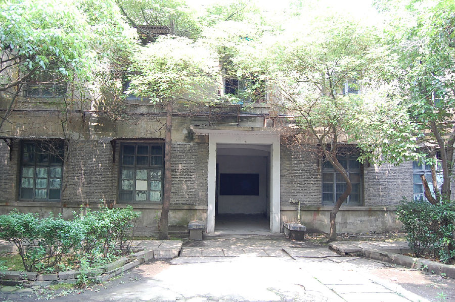

嘉兴市文物保护网 · 市级文物保护点 · 2020-11-09 · 原文

嘉兴电气控制设备厂老厂区位于嘉兴市南湖区新嘉街道竹桥社区洪波路58号，现已整体改制为浙江嘉控电气股份有限公司。企业创建于1956年，系原机械工业部定点生产低压电器元件和电气成套装置的中一型重点企业，占地面积82800平方米，主要产品有控制电器以及电气成套装置等。嘉控产品蜚声海外，以国内领先的技术和优异的性能不仅为北京中南海、人民大会堂等重要建筑工程选用，还包括航空航天和国家重点军工项目所选用。现建议保留老厂区五个车间，占地面积3568平方米，建筑均青砖砌墙，未粉刷，悬山顶，砖混结构，高一层，局部两层。东西走向，四侧都开门。嘉兴电气控制设备厂曾是建国初期嘉兴的国有重点企业，其生产低压电器元件和电气成套装置技术处于国内领先地位，具有较高的历史和科学价值。2009年公布为嘉兴市文物保护点。